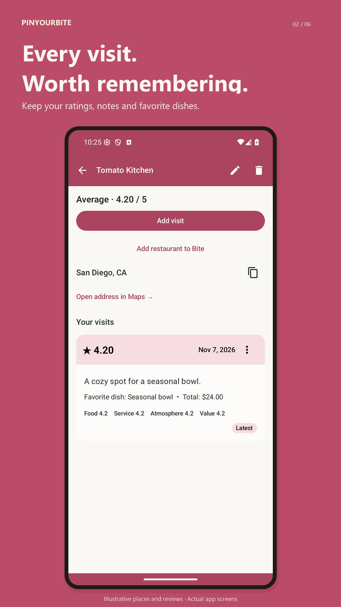
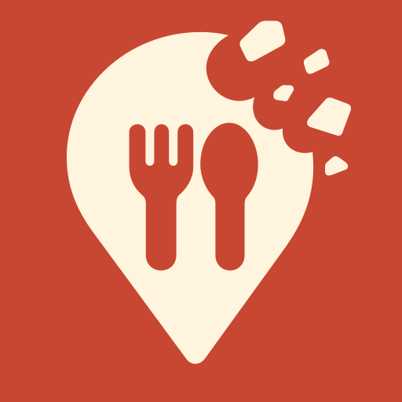
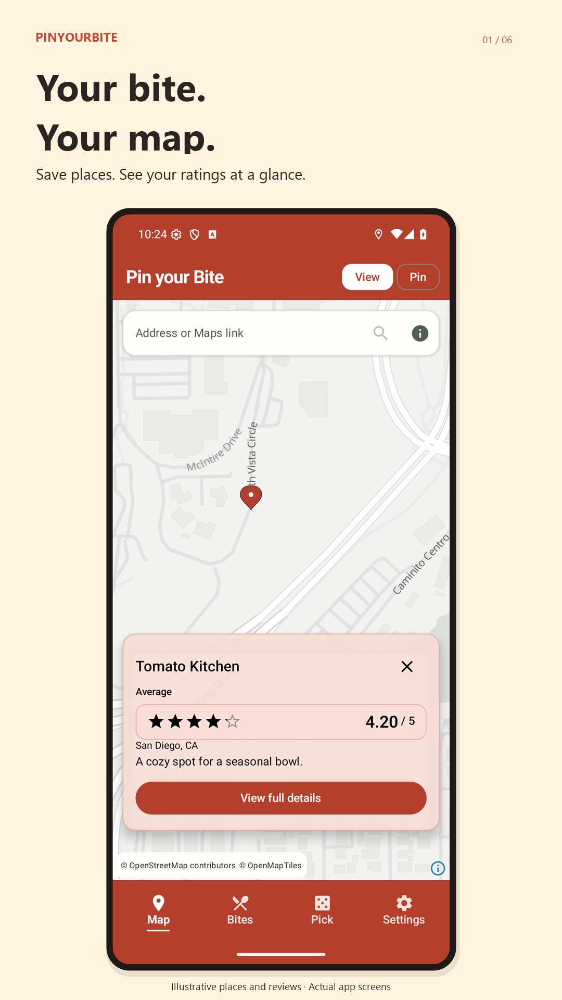
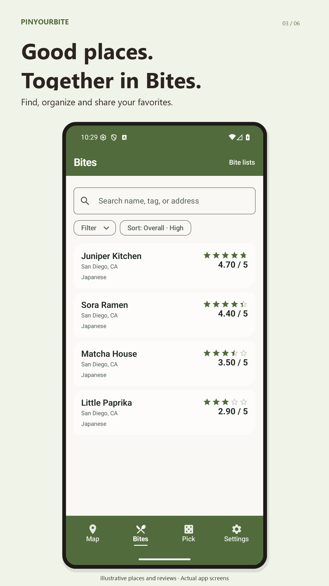
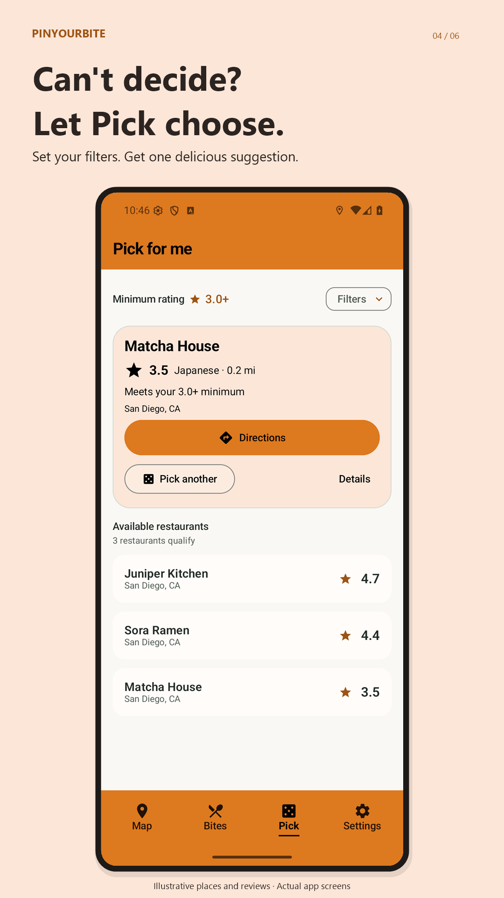

Rate it your way
Record visits, photos and favorite dishes. Tune the rating weights to what matters to you.

PinYourBiteA little journal for every delicious discovery
Remember the places you love, rate them your way, and find your next bite. Your restaurant journal stays on your device.
Get PinYourBite on Google PlayFor Android · Contains ads · No account needed

Less wondering. More enjoying.
From your first visit to your next favorite, make it personal.

Record visits, photos and favorite dishes. Tune the rating weights to what matters to you.

Organize restaurants into Bites, find a saved favorite, and share a list with a friend.

Set your rating and distance filters, then get a suggestion from your saved restaurants.
Tomato, Mango, Caramel, Matcha, Guava—or a color of your own.
Find your next bite on Google Play ↗Screenshots use illustrative places and reviews. Maps, address lookup and advertising use third-party services; see our privacy policy.